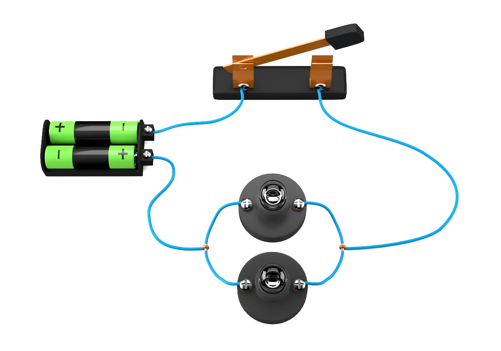
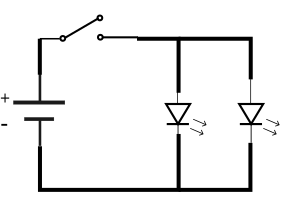

Para controlar el modo en que fluye la corriente eléctrica se construyen caminos interconectados. El sistema
de caminos
por los que fluye la corriente eléctrica se llama circuito eléctrico.
Un circuito eléctrico incluye varios componentes interconectados.
En este cuadro se muestra un circuito eléctrico

Los circuitos eléctricos se representan mediante un diagrama.
En este cuadro se muestra un diagrama de un circuito eléctrico
